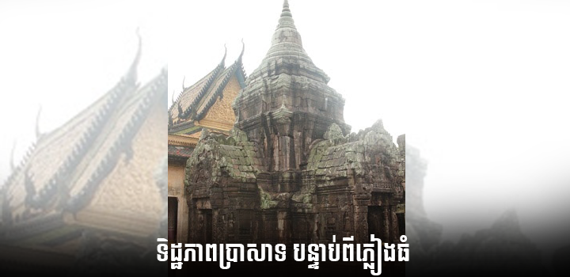
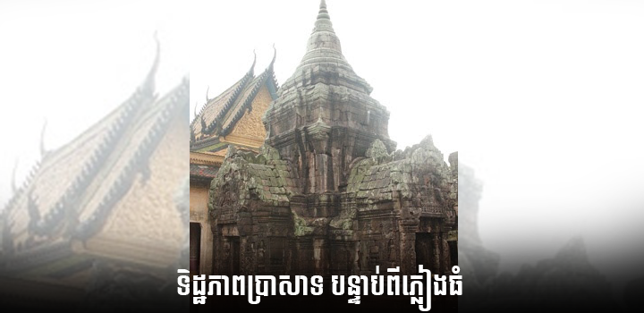

ប្រាសាទនគរបាជ័យ
ប្រាសាទនគរបាជ័យគឺជាប្រភេទរមណីដ្ឋានវប្បធម៌ ប្រវត្តិសាស្រ្តដែលស្ថិតនៅចម្ងាយ២.២គ.ម ពីទីរួមខេត្តកំពង់ចាម តាមបណ្តោយផ្លូវជាតិលេខ៧។ ពីភ្នំពេញទៅរមណីដ្ឋាននេះមានចម្ងាយ ១២២គ.ម ហើយបត់ឆ្វេងដៃ២០០មទៀត។ រថយន្តគ្រប់ប្រភេទអាចចូលទៅដល់ទីតាំងប្រាសាទតែ ម្តង។ ប្រាសាទនគរបាជ័យចែកចេញជា៖
ទន្លេអុំៈ ទន្លេអុំស្ថិតនៅខាងកើតនៃប្រាសាទមានទំហំ ៤០០មx៥០០ម ដែលមានចម្ងាយ ប្រមាណ៣០០មពីប្រាសាទ។
ប្រាសាទនេះមានរឿងព្រេងមួយដ៏គួរឲ្យចាប់អារម្មណ៏ ហើយមានចេតិយនិងតូបអ្នកតាសម្គាល់ជាភស្តុតាងទៀតផង។ រឿងនេះសង្ខេបដោយខ្លីគឺ មានពីរនាក់ប្តីប្រពន្ធមានកូនប្រុសមួយ ពេលយកទៅមុជទឹកនៅទន្លេមិនប្រយ័ត្នក៏របូតដៃធ្លាក់កូនចូលទៅក្នុង ទឹក ប៉ុន្តែស្រាប់តែមានត្រីធំមួយពាំយកទារកនោះទៅ។ ត្រីនោះត្រូវបានអ្នកនេសាទចិនចាប់បានហើយយកទៅថ្វាយស្តេចព្រោះឃើញ ត្រីនោះធំចម្លែក ពេលវះពោះត្រីនោះក៏ត្រលប់ជាឃើញទារកនោះនៅមានជីវិត ស្តេចចិនក៏យកទុកជាកូនចញ្ចឹម។
 កុមារនោះលុះធំមានតម្រេះខ្ពស់និងរូបសម្បត្តិល្អ ក៏សួរស្តេចពីប្រវត្តិដើមរបស់ខ្លួន លុះដឹងរឿងហេតុអស់ហើយក៏សុំឪពុកចិញ្ចឹមមកតាមរកឪពុកម្តាយបង្កើតនៅ ស្រុកខ្មែរវិញ។ លុះមកដល់ក៏ទៅសុំសំណាក់និងម្តាយបង្កើតខ្លួន យូរៗទៅដោយពុំបានដឹងក៏បានរួមរស់ជាមួយម្តាយខ្លួនឯង។ តកាលក្រោយមកពេលដែលចៅព្រហ្ម(នាមកុមារនោះ)ដឹងរឿងហេតុក៏សំពះសុំ ខមាទោសពីម្តាយ ឯម្តាយក៏បង្គាប់ថាឲ្យធ្វើចេតិយមួយពេលម្តាយស្លាប់ ហើយឲ្យសង់ជារូបកូនសំពះចេតិយម្តាយពេលកូនស្លាប់ទៅដែរឲ្យបានគ្រប់ ៥០០០ឆ្នាំ ទើបរួចពីកម្មពាវេរា ទាំងនោះ។

ចៅព្រហ្មដោយមានចំនេះខ្ពង់ខ្ពស់ក៏បានឡើងធ្វើជាគ្រូអាចារ្យនៅ ភូមិស្រុកនោះទៅ ហើយបានបញ្ជារឲ្យសិស្សគណសាងសងតាមបញ្ជាររបស់ម្តាយលោក។ ដល់ពេលលោកស្លាប់ទៅសិស្សគណក៏សាងសង់រូបលោកសំពះទៅកាន់ចេតិយនោះទៅ ហើយឈ្មោះលោកក៏បានត្រូវគេហៅថា តាព្រហ្មៗវិញ ឯម្តាយលោកគេហៅថា យាយពៅៗ រហូតដល់សព្វថ្ងៃ។ សព្វថ្ងៃនេះនៅក្នុងកំពែងជាន់ទី២មានវិហារស៊ីម៉ង់មួយដែលគេហៅថា វិហារយាយពៅ ឯវិហារតាព្រហ្មគឺស្ថិតនៅឯកំពែងជាន់ទីមួយមានលក្ខណៈតាមបែបចិនលាយនិង ខ្មែរផងដែរ។ ឯចេតិយនៅក្នុងរូបនេះគឺជាតេចិយដែលអ្នកស្រុកជឿថាជាចេតិយយាយពៅ នេះឯង។
កុមារនោះលុះធំមានតម្រេះខ្ពស់និងរូបសម្បត្តិល្អ ក៏សួរស្តេចពីប្រវត្តិដើមរបស់ខ្លួន លុះដឹងរឿងហេតុអស់ហើយក៏សុំឪពុកចិញ្ចឹមមកតាមរកឪពុកម្តាយបង្កើតនៅ ស្រុកខ្មែរវិញ។ លុះមកដល់ក៏ទៅសុំសំណាក់និងម្តាយបង្កើតខ្លួន យូរៗទៅដោយពុំបានដឹងក៏បានរួមរស់ជាមួយម្តាយខ្លួនឯង។ តកាលក្រោយមកពេលដែលចៅព្រហ្ម(នាមកុមារនោះ)ដឹងរឿងហេតុក៏សំពះសុំ ខមាទោសពីម្តាយ ឯម្តាយក៏បង្គាប់ថាឲ្យធ្វើចេតិយមួយពេលម្តាយស្លាប់ ហើយឲ្យសង់ជារូបកូនសំពះចេតិយម្តាយពេលកូនស្លាប់ទៅដែរឲ្យបានគ្រប់ ៥០០០ឆ្នាំ ទើបរួចពីកម្មពាវេរា ទាំងនោះ។

ចៅព្រហ្មដោយមានចំនេះខ្ពង់ខ្ពស់ក៏បានឡើងធ្វើជាគ្រូអាចារ្យនៅ ភូមិស្រុកនោះទៅ ហើយបានបញ្ជារឲ្យសិស្សគណសាងសងតាមបញ្ជាររបស់ម្តាយលោក។ ដល់ពេលលោកស្លាប់ទៅសិស្សគណក៏សាងសង់រូបលោកសំពះទៅកាន់ចេតិយនោះទៅ ហើយឈ្មោះលោកក៏បានត្រូវគេហៅថា តាព្រហ្មៗវិញ ឯម្តាយលោកគេហៅថា យាយពៅៗ រហូតដល់សព្វថ្ងៃ។ សព្វថ្ងៃនេះនៅក្នុងកំពែងជាន់ទី២មានវិហារស៊ីម៉ង់មួយដែលគេហៅថា វិហារយាយពៅ ឯវិហារតាព្រហ្មគឺស្ថិតនៅឯកំពែងជាន់ទីមួយមានលក្ខណៈតាមបែបចិនលាយនិង ខ្មែរផងដែរ។ ឯចេតិយនៅក្នុងរូបនេះគឺជាតេចិយដែលអ្នកស្រុកជឿថាជាចេតិយយាយពៅ នេះឯង។